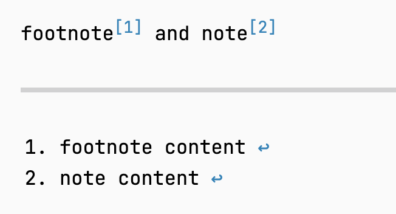
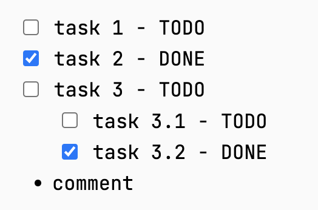
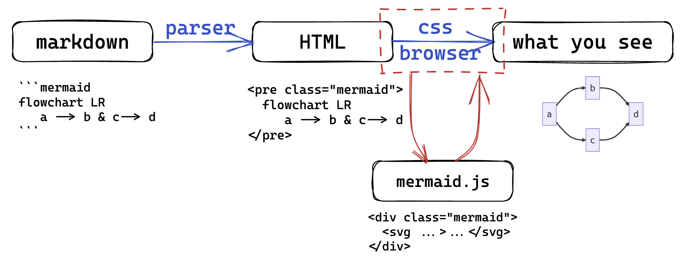

<!DOCTYPE html>
<html lang="en">
  <head>
    <meta charset="utf-8" />
    <meta name="viewport" content="width=device-width, initial-scale=1.0, maximum-scale=1.0, user-scalable=no" />

    <title>lec3 - 2023秋冬实用技能拾遗</title>
    <link rel="shortcut icon" href="./favicon.ico" />
    <link rel="stylesheet" href="./dist/reset.css" />
    <link rel="stylesheet" href="./dist/reveal.css" />
    <link rel="stylesheet" href="./dist/theme/simple.css" id="theme" />
    <link rel="stylesheet" href="./css/highlight/github.css" />
    <script src="https://cdn.jsdelivr.net/npm/reveal.js-menu@2.1.0/menu.js"></script>

    <link rel="stylesheet" href="./assets/custom.css" />

  </head>
  <body>
    <div class="reveal">
      <div class="slides"><section ><section data-markdown><script type="text/template">

<!-- .slide: data-background="lec3/cover.png" -->

</script></section><section data-markdown><script type="text/template">
<!-- .slide: data-background="lec3/background.png" -->

## 本节内容

- 什么是 Markdown？它的本质是什么？
- Markdown 语法概览
    - 基于 CommonMark 的语法标准概览
- Markdown 常用的扩展语法
    - 表格、脚注、任务列表（markdown 侧）
    - 数学公式、mermaid 图表（非 markdown 侧）
- 支持 Markdown 的实用工具介绍
    - 文档编写：vscode mpe 插件、Marktext...
    - 网站建设：mkdocs、hexo、reveal-md...

（更多关于如何规范编写文档、如何美化 markdown 主题等内容，将在后续课程中讲解）

</script></section><section data-markdown><script type="text/template">
<!-- .slide: data-background="lec3/background.png" -->

## 如何自学本章节内容

- Markdown CommonMark 标准文档 [spec.commonmark.org](https://spec.commonmark.org/)
    - 其它方言标准也可通读参考
- 多用，自己尝试使用并熟悉（推荐软件等见 slides 后面）
- 通读本 slides 了解一些我推荐的工具
    - 去看官网/官方文档，多用多熟悉

</script></section></section><section ><section data-markdown><script type="text/template">
<!-- .slide: data-background="lec3/background.png" -->

<div class="middle center">
<div style="width: 100%">

# Part.1 什么是 Markdown？

</div>
</div>

</script></section><section data-markdown><script type="text/template">
<!-- .slide: data-background="lec3/background.png" -->

## Markdown 诞生历史

> John Gruber:  
> &nbsp;&nbsp;Markdown is intended to be as easy-to-read and easy-to-write as is feasible.

- 2004 年 John Gruber 发布了第一个 markdown 语法手册和 perl 语言写的转换器
    - [daringfireball.net/projects/markdown](https://daringfireball.net/projects/markdown)
- 以易读易写为目标，成为了电子邮件标记格式惯例
- 2016 年正式注册了 CommonMark（标准化）、GFM（GitHub 风格）等变体

</script></section><section data-markdown><script type="text/template">
<!-- .slide: data-background="lec3/background.png" -->

## 什么是 Markdown

- 是一种轻量级文本标记语言（markup language）
- 可以通过纯文本来表示带有格式的文档，同时保证易读性
- 语法简单，易于学习，易于使用
- 可以轻松转换为 HTML（映射到 HTML 的子集）

<div class="mul-cols">
<div class="col">

```markdown
# This is a heading
## This is a sub-heading

This is a paragraph. and:  

- *emphasis* 
- **strong importance**
- `code`
- [links](some/url)
```

</div>

<div class="col">

```html
<h1>This is a heading</h1>
<h2>This is a sub-heading</h2>
<p>This is a paragraph. and:</p>
<ul>
<li><em>emphasis</em></li>
<li><strong>strong importance</strong></li>
<li><code>code</code></li>
<li><a href="some/url">links</a></li>
</ul>
```

</div>

</div>

</script></section><section data-markdown><script type="text/template">
<!-- .slide: data-background="lec3/background.png" -->

## Markdown 的本质

- 常见错误理解
    - ~~Markdown <=> Typora：格式难看，字体难看，etc.~~
    - ~~Markdown 是一种排版语言~~
- Markdown 的**本质**是一种*标记语言*，是对 HTML 的一种简化
- Markdown 只决定解析出的 HTML 是什么，不会决定任何视觉上的样式
    - 所有最终视觉上的效果都由 HTML+CSS 决定
    - 我的建议：将 markdown 和一切视觉效果解绑

<div style="text-align: center; margin-top: 15px;">

</div>

</script></section><section data-markdown><script type="text/template">
<!-- .slide: data-background="lec3/background.png" -->

## 各种语法标准……？

为什么会有人觉得 markdown 语法有些混乱？

- John Gruber 所规定的语法过于简单，具体实现都没有明确规定
- 因此诞生了很多不同的标准，甚至各个软件、解析器都会有自己的实现
- 试图统一？有些困难，但不是没有成果，比如 CommonMark 规范

常见的规范都有什么？在哪里能看到呢？

- John Gruber 的最初始语法：[daringfireball.net/projects/markdown](https://daringfireball.net/projects/markdown)
- CommonMark 标准，实现细节更明确：[spec.commonmark.org](https://spec.commonmark.org/0.30/)
- 各个软件/网站自己的规范文档：
    - GitHub GFM 规范：[github.github.com/gfm](https://github.github.com/gfm/)（改自 CommonMark）
    - Pandoc 规范：[pandoc.org/MANUAL.html#pandocs-markdown](https://pandoc.org/MANUAL.html#pandocs-markdown)
    - Typora 规范：[support.typora.io](https://support.typora.io/Markdown-Reference/)（效仿 GFM，但实际有些混乱）
    - ...

</script></section><section data-markdown><script type="text/template">
<!-- .slide: data-background="lec3/background.png" -->

## 学习用软件

（更多长期使用的软件推荐在后面章节再说）

- 裸的 markdown 解析器（如果你熟悉 HTML 语法）
    - [markdown-it](https://github.com/markdown-it/markdown-it)：完美支持 CommonMark 的解析器
    - [markdown-it-py](https://github.com/executablebooks/markdown-it-py)：Python 版本，带有命令行工具
    - [python-markdown](https://github.com/Python-Markdown/markdown/)：更传统的 Python 版本解析器（标准不清晰）
    - [pandoc](https://pandoc.org/)：支持多种格式的转换器，但有自己的一套标准
- 所见即所得的 markdown 编辑器
    - [vscode mpe extension](https://marketplace.visualstudio.com/items?itemName=shd101wyy.markdown-preview-enhanced)：VSCode 的插件，支持实时预览
    - [Mark Text](https://marktext.app/)：开源 markdown 编辑器
    - [obsidian](https://obsidian.md/) 等笔记软件也支持 markdown
    - ~~[Typora](https://typora.io/)~~：闭源付费编辑器，用户多但我不推荐

</script></section></section><section ><section data-markdown><script type="text/template">
<!-- .slide: data-background="lec3/background.png" -->

<div class="middle center">
<div style="width: 100%">

# Part.2 Markdown 语法概览

基于 CommonMark 标准的语法概览

</div>
</div>

</script></section><section data-markdown><script type="text/template">
<!-- .slide: data-background="lec3/background.png" -->

## 标题语法

<div class="mul-cols">
<div class="col">

- 井号 # 开头，后接内容
- 井号与标题间至少一个空格
- 只有 1～6 级标题，7 及以上不会变成标题格式
- 转为 html 利用 h1 ~ h6 tag
- 内容后面可以接任意多 # 来 “闭合”
- 可以跨过某一级，但不推荐
    - 请明确好层级关系

</div>

<div class="col">

```markdown
# 一级标题
## 二级标题
### 三级标题
#### 四级标题
##### 五级标题
###### 六级标题
```
```html
<h1>一级标题</h1>
<h2>二级标题</h2>
<h3>三级标题</h3>
<h4>四级标题</h4>
<h5>五级标题</h5>
<h6>六级标题</h6>
```

</div>

</div>

</script></section><section data-markdown><script type="text/template">
<!-- .slide: data-background="lec3/background.png" -->

## *标题语法（Setext 式）

<div class="mul-cols">
<div class="col">

- 使用 # 的称为 ATX 样式
- markdown 支持另一种称为 Setext 样式的标题
- 文字下方加任意多 = 表示一级标题
- 文字下方加任意多 - 表示二级标题

</div>
<div class="col">

```markdown
一级标题
=======

二级标题
-------
```
```html
<h1>一级标题</h1>
<h2>二级标题</h2>
```

</div>

</div>

</script></section><section data-markdown><script type="text/template">
<!-- .slide: data-background="lec3/background.png" -->

## 段落语法

- 直接编写文本即为普通段落
- 段落间通过空行来分割（有空行就有新的段落）
- 段落内换行需要在行尾加两个空格（`<br/>`）
    - 没有空格则源码内两行内容会合并为一行（并加一个空格）
- 关于换行：
    - 要搞清楚不同段落和同一段落内不同行的区别
    - CommonMark 是如上要求
    - 有些软件的规范会认为段落内的换行不需要两个空格
- 关于空格：
    - 多个连续的空格会被解析为一个空格
    - 但是在代码块中，空格会被保留
    - 使用多个空格可以使用 `&nbsp; &emsp;` 等 HTML 语法

</script></section><section data-markdown><script type="text/template">
<!-- .slide: data-background="lec3/background.png" -->

## 引言

<div class="mul-cols">
<div class="col">

- 一个 > 加一个空格后接内容
- 内部可以嵌套使用 markdown 语法
    - 可以嵌套任意多层引言
- 连续的 > 行属于同一个引言块
- 需要一个空行来退出环境
- 软件里一般使用一次 enter 退出一层

</div>
<div class="col">

```markdown
> ## Quote
> 第二行
> > 第二层
> 
> 回到第一层

退出引言
```

</div>

</div>

</script></section><section data-markdown><script type="text/template">
<!-- .slide: data-background="lec3/background.png" -->

## 无序列表

<div class="mul-cols">
<div class="col">

- `- + *` 后接一个空格然后接内容
- 同一个层级的符号要相同
- 如果一个项中要包含内容，需要换一行然后加一次缩进
- 嵌套列表直接缩进一次即可

</div>
<div class="col">

```markdown
- node 1
- node 2

  content in node 2
- node 3

* 第一层
    + 第二层
        * 第三层
    + 第二层
* 第一层
```

</div>
</div>

</script></section><section data-markdown><script type="text/template">
<!-- .slide: data-background="lec3/background.png" -->

## 有序列表

<div class="mul-cols">
<div class="col">

- 数字加点 后接空格 再接内容
    - 也可以数字加 ) 后接空格 再接内容
- 标准的 md 完全无视数字内容，所有有序列表都从 1 开始计数
- 但一般软件都会处理起始数字
- 有序列表可以和无序列表互相嵌套

</div>
<div class="col">

```markdown
1. node 1
2. node 2
4. node 3
1. node 4

1. 有序 
    - 嵌套无序
    - 嵌套无序
2. 有序
```

</div>

</div>

</script></section><section data-markdown><script type="text/template">
<!-- .slide: data-background="lec3/background.png" -->

## 分割线

<div class="mul-cols">
<div class="col">

- 使用 `* - _` 中任意一个字符重复至少三次
- 可以有空格分隔，甚至组织成不同样式
- 被转换为 html 中的 \<hr/>
- 分割线上下最好都加空行
- 特别记住 - 分割线上方不要有文字（Setext 标题）

</div>
<div class="col">

```text
***

* * *
_  __  _  __

----------------
```

</div>

</div>

</script></section><section data-markdown><script type="text/template">
<!-- .slide: data-background="lec3/background.png" -->

## 代码块

<div class="mul-cols">
<div class="col">

- 缩进形式
    - 空行加一个缩进创建一个代码块
    - 内部被原样展现
    - 软件不会进行代码高亮
- 篱笆形式
    - 使用三个或以上 ` 或 ~ 围起来构成代码块
    - ` 或 ~ 后面可以加语言名称
        - 带有高亮支持的软件会对其进行高亮显示
        - 不加（或加 text）不进行高亮

</div>
<div class="col">

~~~markdown
code block:

    print("hello world")
    # line 2

out

```c
#include <stdio.h>

int main() {
    printf("hello world\n");
    return 0;
}
```
~~~

</div>

</div>

</script></section><section data-markdown><script type="text/template">
<!-- .slide: data-background="lec3/background.png" -->

## 行内标记

<div class="mul-cols">
<div class="col">

- 格式见右侧，* 和 _ 等效
- 下划线无 markdown 语法，可以直接使用 html 的 \<u> tag 来实现
- 行内标记都可以互相嵌套
    - 也可以嵌套在其它块中
    - 行内代码中不行
- 最好在标记左右均加空格
- 文字中使用 * 建议加上 \ 转义

</div>
<div class="col">

```markdown
*斜体* _也是斜体_ \*这不是斜体\*
**粗体** __也是粗体__
***粗斜体*** ___也是粗斜体___
`行内代码`
~~删除线~~
<u>下划线</u>
```
```html
<em>斜体</em>
<strong>粗体</strong>
<code>行内代码</code>
<del>删除线</del>
```

</div>

</div>

</script></section><section data-markdown><script type="text/template">
<!-- .slide: data-background="lec3/background.png" -->

## 插入图片

<div class="mul-cols">
<div class="col">

- 感叹号-方括号-圆括号结合的形式
- 图片描述可以省略
- 位置可以是链接，也可以是本地文件路径
- 常规 md 语法插入图片无法调大小，使用 html img 的 style 可以调节
- 软件一般可以帮你保存图片到某一目录
- 记住图片不会嵌入 md 文件中，要交给别人 md 文件的话请附带上所有素材文件

</div>
<div class="col">

```markdown


```

</div>

</div>

</script></section><section data-markdown><script type="text/template">
<!-- .slide: data-background="lec3/background.png" -->

## 插入链接

<div class="mul-cols">
<div class="col">

- 方括号-圆括号组合
- 文字是要显示的内容，链接附加在其上
- 文字中可以嵌套行内标记格式
- 链接左右加 <> 自动链接

</div>
<div class="col">

```markdown
[文字](链接)

<链接>
等价于 [链接](链接)
```
```html
<a href="链接">文字</a>
```

</div>

</div>

</script></section><section data-markdown><script type="text/template">
<!-- .slide: data-background="lec3/background.png" -->

## 内联 HTML 语法

- markdown 中一般可以直接使用 html 语法和 css 样式
- 解析器会原封不动的保留 html 内容
- 文本中使用 \<tag\> 这样的字样需要用 \ 转义
- GitHub（GFM）仅支持少量 html，且不支持 css 样式
- html 语法不赘述

</script></section></section><section ><section data-markdown><script type="text/template">
<!-- .slide: data-background="lec3/background.png" -->

<div class="middle center">
<div style="width: 100%">

# Part.3 常用扩展语法

</div>
</div>

</script></section><section data-markdown><script type="text/template">
<!-- .slide: data-background="lec3/background.png" -->

## 表格

<div class="mul-cols">
<div class="col">

- 不在标准中，但一般这样使用
- 每个单元格的内容用 | 分开
    - 内容中使用 | 要用 \ 转义
- 第二行一定要有，规定整列对齐方式
    - `|--|` 或 `|:--|` 左对齐
    - `|--:|` 右对齐
    - `|:--:|` 居中对齐
    - `-` 的个数随意
- 仅可以处理简单表格，复杂的用 html 插入
- 推荐 [tablesgenerator.com](https://www.tablesgenerator.com/)

</div>
<div class="col">

```markdown
|表头|表头|表头|
|:--|:--:|--:|
|居左|居中|居右|
|abcde|fghij|klmno|
|.......|.......|.......|
```

<style>
section > .mul-cols > .col > table {
  border: 1.5pt solid;
  text-align: center;
  page-break-inside: avoid;
}
section > .mul-cols > .col > table > tbody > tr > td {
  border: 0.75pt solid;
  padding: 7px;
}
section > .mul-cols > .col > table > tbody > tr {
  border: 0.75pt solid;
  padding: 7px;
}
section > .mul-cols > .col > table > thead {
  border: 0.75pt solid;
  font-size: 0.9em;
}
section > .mul-cols > .col > table th {
  border: 0.75px solid;
}
</style>

|表头|表头|表头|
|:--|:--:|--:|
|居左|居中|居右|
|abcde|fghij|klmno|
|.......|.......|.......|

</div>

</div>

</script></section><section data-markdown><script type="text/template">
<!-- .slide: data-background="lec3/background.png" -->

## 脚注

<div class="mul-cols">
<div class="col">

- 使用 `[^脚注名]` 插入脚注
- 在文中任意位置添加 `[^脚注名]: 脚注内容` 定义脚注内容
- 脚注名只是标记、匹配使用的，可以是任何字符串
    - 最终的编号一般由在文中出现的顺序决定

</div>
<div class="col">

```markdown
[^note]: note content

footnote[^1] and note[^note]

[^1]: footnote content
```

<div style="text-align: center; margin-top: 15px;">

</div>

</div>

</div>

</script></section><section data-markdown><script type="text/template">
<!-- .slide: data-background="lec3/background.png" -->

## 任务列表

<div class="mul-cols">
<div class="col">

- 使用 `- [ ]` 插入未完成任务
- 使用 `- [x]` 插入已完成任务
- 任务列表可以和其它列表混合使用
- 如 GitHub 这样的网站会自动加上 checkbox 支持修改

</div>
<div class="col">

```markdown
- [ ] task 1 - TODO
- [x] task 2 - DONE
- [ ] task 3 - TODO
    - [ ] task 3.1
    - [x] task 3.2
- comment
```

<div style="text-align: center; margin-top: 15px;">

</div>

</div>

</div>

</script></section><section data-markdown><script type="text/template">
<!-- .slide: data-background="lec3/background.png" -->

## 那么……公式呢？

- 严格来说这一直都不是 markdown 语法的一部分
- 关于公式处理的一切都不在 markdown->HTML 的过程中
- HTML 保留公式文本，交给 [MathJax](https://www.mathjax.org/) 或 [KaTeX](https://katex.org/) 等 js 库来处理
- 一般使用一对 \$ 作为行内公式标记，一对 \$\$ 作为块级公式标记
    - 可以更换，由具体 js 库决定
    - 或者 markdown 解析器其实也可以插手此过程，比如 ```math
- 内部公式语法 KaTeX/MathJax 均使用 LaTeX 公式语法，下次课详细讲解

<div style="text-align: center; margin-top: 15px;">

</div>

</script></section><section data-markdown><script type="text/template">
<!-- .slide: data-background="lec3/background.png" -->

## 流程图/时序图/甘特图/...

- 非常常见的扩展之一，同样也不是 markdown 语法的一部分
- 一般使用 [mermaid.js](https://mermaid.js.org/) 来处理、制图
- 目前很多编辑器都自带 mermaid 支持，详见[官方文档集成部分](https://mermaid.js.org/ecosystem/integrations.html)
- markdown 在这里做的只是将其转为 ”mermaid“ 语言的代码块，然后交给 mermaid.js 来识别并处理
- 详细语法见 [mermaid.js 官方文档](https://mermaid.js.org/intro/)，用法非常丰富

<div style="text-align: center; margin-top: 15px;">

</div>

</script></section></section><section ><section data-markdown><script type="text/template">
<!-- .slide: data-background="lec3/background.png" -->

<div class="middle center">
<div style="width: 100%">

# Part.4 支持 Markdown 的实用工具

</div>
</div>

</script></section><section data-markdown><script type="text/template">
<!-- .slide: data-background="lec3/background.png" -->

## 实用工具推荐

- 文档编写类
    - 💡&nbsp;利用 HTML+CSS 灵活的样式来进行排版
    - 🏆&nbsp;个人首推 vscode + [markdown preview enhanced](https://shd101wyy.github.io/markdown-preview-enhanced/#/zh-cn/) 插件
    - 所见即所得的开源编辑器：[Mark Text](https://marktext.app/)
    - 较好支持 markdown 的笔记软件：[obsidian](https://obsidian.md/)
- 网站搭建类
    - 💡&nbsp;利用 markdown 来大大减小编写 HTML 网页的工作量
    - 🏆&nbsp;笔记类网站制作：[mkdocs](https://www.mkdocs.org/)、[docsify](https://docsify.js.org/#/)、...
    - 🏆&nbsp;博客类网站制作：[hexo](https://hexo.io/zh-cn/)、[hugo](https://gohugo.io/)、...
    - 🏆&nbsp;在线 slides 制作：[reveal-md](https://github.com/webpro/reveal-md)（[reveal.js](https://revealjs.com/)）、[Slidev](https://cn.sli.dev/guide/)、...
    - 书籍类网站制作：[mdBook](https://rust-lang.github.io/mdBook/)、[d2lbook](https://book.d2l.ai/)、...
    - “老式” Python 项目文档生成：[Sphinx](https://www.sphinx-doc.org/en/master/)（一般使用 [reST](https://www.sphinx-doc.org/en/master/usage/restructuredtext/basics.html) 语法）

</script></section><section data-markdown><script type="text/template">
<!-- .slide: data-background="lec3/background.png" -->

## Markdown Preview Enhanced

- vscode 插件：[Markdown Preview Enhanced](https://marketplace.visualstudio.com/items?itemName=shd101wyy.markdown-preview-enhanced)
- 官网/文档：[shd101wyy.github.io/markdown-preview-enhanced](https://shd101wyy.github.io/markdown-preview-enhanced/#/zh-cn/)
- 特性：
    - 源码 <=> 预览 同步
    - 导出 HTML、PDF、PNG、...，多种导出方式，**自定义主题**
        - 基于 mpe 的主题自定义指南将在后续课程中介绍
    - 支持数学公式、多种图表（mermaid、wavedrom、flow charts、...）
    - TOC 目录、文件导入、admonition、CriticMarkup 等扩展语法
    - 代码块执行（Code Chunk）
    - 自定义 markdown parser 扩展等高级功能
- 更多、更详细用法请见官方文档

</script></section><section data-markdown><script type="text/template">
<!-- .slide: data-background="lec3/background.png" -->

## mkdocs

- 基于 python 的静态网站生成器，适合笔记本/文档类网站
    - e.g. [note.tonycrane.cc](https://note.tonycrane.cc/)
- 官网：[www.mkdocs.org](https://www.mkdocs.org/)；唯一推荐主题：[mkdocs-material](https://github.com/squidfunk/mkdocs-material)（[文档](https://squidfunk.github.io/mkdocs-material/)）
- 使用 python-markdown，可方便配置具体扩展，material 插件也有语法扩展
- 优点：简便灵活，主题自带功能丰富，插件多
- 实现逻辑：
    - 一切都在 mkdocs.yml 中进行配置，通过 nav 规定网站导航，从中读取 md 源文件，解析后嵌入主题的 HTML 框架中

<div class="mul-cols">
<div class="col">

```shell
$ pip install mkdocs # 安装
$ mkdocs new <name>  # 新建
$ mkdocs serve       # 实时预览
$ mkdocs build       # 构建
$ mkdocs gh-deploy   # 部署
```

</div>
<div class="col">

```text
test/
 ├── docs/       # 存放文档源码
 │     └── index.md
 └── mkdocs.yml  # 配置文件
```

</div>

</div>

</script></section><section data-markdown><script type="text/template">
<!-- .slide: data-background="lec3/background.png" -->

## hexo

- 基于 nodejs 的**博客**站点生成工具
    - e.g. [blog.tonycrane.cc](https://blog.tonycrane.cc/)
- 官网/文档：[hexo.io](https://hexo.io/zh-cn/index.html)
- 有多种渲染器（markdown 解析器）可以选择
- 优点：插件众多，主题众多，生态良好

<div class="mul-cols">
<div class="col">

```shell
$ npm install -g hexo-cli # 安装
$ hexo init blog # 初始化
$ npm install    # 初始化安装
$ hexo s         # 实时预览
$ hexo g         # 构建生成
$ hexo d         # 部署
```

</div>
<div class="col">

```text
├── _config.yml   # 配置文件
├── package.json  # 应用信息
├── scaffolds/    # 模板文件夹
├── source/       # 源文件夹
│     └── _posts/   # 稿件文件夹
└── themes/       # 主题文件夹
```

</div>

</div>

</script></section><section data-markdown><script type="text/template">
<!-- .slide: data-background="lec3/background.png" -->

## reveal-md

- 基于 [reveal.js](https://revealjs.com/) 的一个包装，更易用
    - e.g. 本课程全部 slides 均使用 reveal-md 制作
- GitHub：[webpro/reveal-md](https://github.com/webpro/reveal-md)，文档只有 README 那么多
- 只是一个包装，主要内容都由 reveal.js 提供，详细用法要看那个文档
- 优点：交互方便，二维组织结构，导出 PDF，演讲者模式，样式易编写
- 缺点：页面内动画较复杂
- 我的主题模板：[TonyCrane/slide-template](https://github.com/TonyCrane/slide-template)

<div class="mul-cols">
<div class="col">

```yaml
title: Web Page Title
theme: simple
highlightTheme: github
revealOptions:
    transition: 'slide'
    transitionSpeed: fast
    ...
```

</div>
<div class="col">

```shell
$ npm install -g reveal-md
$ reveal-md <file>.md -w
$ reveal-md <file>.md
$ # more args see README
```

</div>

</div>

</script></section></section><section  data-markdown><script type="text/template">
<!-- .slide: data-background="lec3/ending.png" -->
</script></section></div>
    </div>

    <script src="./dist/reveal.js"></script>

    <script src="./plugin/markdown/markdown.js"></script>
    <script src="./plugin/highlight/highlight.js"></script>
    <script src="./plugin/zoom/zoom.js"></script>
    <script src="./plugin/notes/notes.js"></script>
    <script src="./plugin/math/math.js"></script>
    <script>
      function extend() {
        var target = {};
        for (var i = 0; i < arguments.length; i++) {
          var source = arguments[i];
          for (var key in source) {
            if (source.hasOwnProperty(key)) {
              target[key] = source[key];
            }
          }
        }
        return target;
      }

      // default options to init reveal.js
      var defaultOptions = {
        controls: true,
        progress: true,
        history: true,
        center: true,
        transition: 'default',
        slideNumber: true,
        menu: {
          themes: false,
          width: "wide",
          transitions: false,
          markers: true,
          hideMissingTitles: true,
          openButton: true,
          openSlideNumber: true,
          custom: [
            { title: 'Lectures', icon: '<i class="fas fa-external-link-alt">', content: getLecturesMenu() },
          ]
        },
        plugins: [
          RevealMarkdown,
          RevealHighlight,
          RevealZoom,
          RevealNotes,
          RevealMath.KaTeX,
          RevealMenu
        ]
      };

      // options from URL query string
      var queryOptions = Reveal().getQueryHash() || {};

      var options = extend(defaultOptions, {"transition":"slide","transitionSpeed":"fast","center":false,"slideNumber":"c/t","width":1000}, queryOptions);

      function getLecturesMenu() {
        var lectures = [
          { name: "#0 前瞻：通往 Pro 的第一步", src: "../lec0/"},
          { name: "#1 Shell 基础及 CLI 工具推荐", src: "../lec1/"},
          { name: "#2 Git/GitHub 及开源基础", src: "../lec2/"},
          { name: "#3 Markdown 语法及应用", src: "../lec3/"},
          { name: "#4 LaTeX 排版简要介绍", src: "../lec4/"},
          { name: "#5 如何排出规范、美观的文档", src: "../lec5/"},
          { name: "#6 网络/网站基础知识概述", src: "../lec6/"},
        ]
        var lecturesMenu = '<ul class="slide-menu-items">';
        for (var i=0; i < lectures.length; i++) {
          lecturesMenu += '<li class="slide-menu-item"><a href="' + lectures[i].src + '" style="text-decoration:none">' + lectures[i].name + '</a></li>';
        }
        lecturesMenu += '</ul>';
        return lecturesMenu;
      }
    </script>

    <script src="https://cdn.tonycrane.cc/heti/heti.js"></script>
    <script src="./assets/heti_worker.js"></script>

    <script>
      Reveal.initialize(options).then(() => {
        document.querySelector(".backgrounds").setAttribute("style", document.querySelector(".slides").style.cssText);
      });
      Reveal.on('overviewshown', event => {
        document.querySelector(".backgrounds").setAttribute("style", "");
      });
      Reveal.on('overviewhidden', event => {
        document.querySelector(".backgrounds").setAttribute("style", document.querySelector(".slides").style.cssText);
      });
      Reveal.on('resize', event => {
        document.querySelector(".backgrounds").setAttribute("style", document.querySelector(".slides").style.cssText);
      });
    </script>
  </body>
</html>